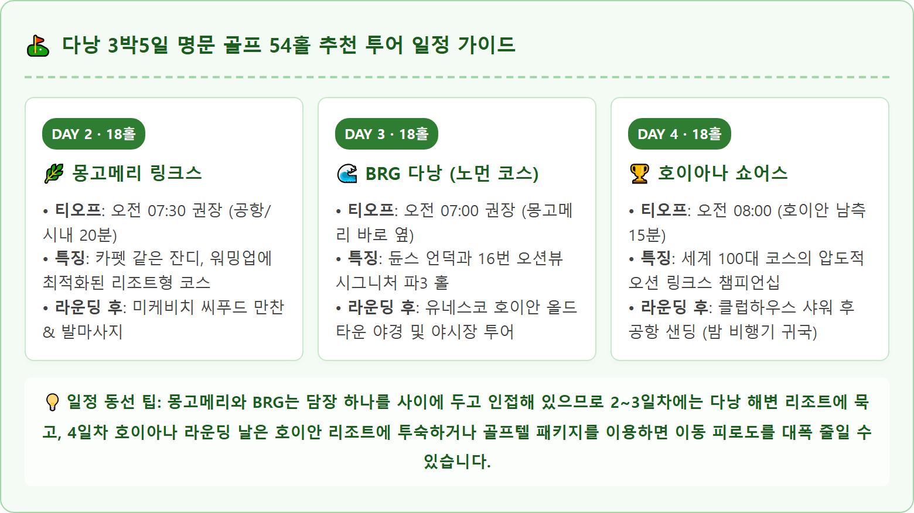
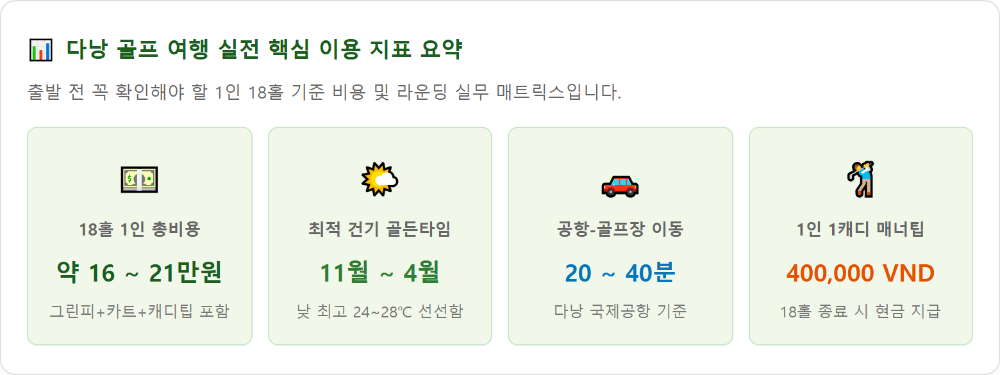

베트남 중부의 대표 해양 도시 다낭(Da Nang)은 직항 항공편이 풍부하고 치안이 안전하여 한국 골퍼들에게 가장 친숙하면서도 만족도가 높은 해외 골프 목적지입니다.
인천, 부산, 대구 등 국내 주요 공항에서 매일 수십 편의 항공기가 운항하며, 비행시간은 약 4시간 20분~4시간 40분 수준입니다. 한국과의 시차는 2시간 느려 현지 도착 후 시차 적응 없이 곧바로 첫날 또는 이튿날 새벽 티오프를 소화할 수 있습니다.
다낭은 열대 몬순 기후에 속하며, 크게 건기(11월 ~ 4월)와 우기(5월 ~ 10월)로 구분됩니다.
다낭에는 총 6개의 정규 골프장이 운영 중이며, 그중에서도 세계적인 명성과 완성도를 자랑하는 3대 명문 코스는 골퍼라면 반드시 경험해야 할 버킷리스트로 꼽힙니다. 세 골프장은 각기 뚜렷한 설계 철학과 코스 개성을 지니고 있습니다.
| 골프장명 | 홀 수 / 규모 | 설계자 (Designer) | 잔디 품종 | 코스 특징 및 난이도 |
|---|---|---|---|---|
| BRG 다낭 골프 리조트 (BRG Da Nang) |
36홀 / 파 144 • 노먼: 7,160yd • 니클라우스: 7,380yd |
그렉 노먼 (Dunes) 잭 니클라우스 (Bulkhead) |
Paspalum (페어웨이) Bermuda (그린) |
전통 링크스 듄스 코스와 목재 벽(Bulkhead)을 활용한 플로리다 습지형 코스가 공존하는 36홀 메머드 코스. 난이도 상. |
| 몽고메리 링크스 (Montgomerie Links) |
18홀 / 파 72 7,090 yards |
콜린 몽고메리 (Colin Montgomerie) |
Paspalum 플래티넘 (전 구역 균일 관리) |
유러피언 투어 개최지. 수많은 벙커와 정교한 그린 언듈레이션, 완만한 모래 언덕과 소나무 숲이 조화된 전략적 코스. 난이도 중상. |
| 호이아나 쇼어스 (Hoiana Shores) |
18홀 / 파 71 7,004 yards |
로버트 트렌트 존스 2세 (Robert Trent Jones Jr.) |
Zeon Zoysia (페어웨이) TifEagle (그린) |
세계 100대 골프장 선정. 남중국해 바다를 직접 마주하는 6개 홀, 바람과 천연 모래언덕이 만든 환상적인 챔피언십 링크스. 난이도 최상. |
2010년 개장한 노먼 코스는 베트남 최초의 진정한 링크스 코스로 평가받습니다. 모래 언덕을 그대로 살려 페어웨이 언듈레이션이 크고, 질긴 러프와 해안 카수아리나 방풍림이 티샷의 정확도를 시험합니다.
시그니처 홀 (16번 홀, 파3, 148m): 남중국해 바다와 참 섬을 정면으로 바라보며 티샷을 날리는 절경의 파3 홀입니다. 바다에서 불어오는 맞바람이 강할 때는 평소보다 2클럽 이상 길게 잡아야 하며, 그린 앞뒤 좌우를 둘러싼 깊은 벙커를 피해 그린 중앙을 공략하는 안전한 전략이 유효합니다.
라이더컵의 전설 콜린 몽고메리가 설계한 이 코스는 스코틀랜드 전통 링크스의 거친 맛에 아시아 특유의 온화한 조경을 완벽하게 녹여냈습니다. 전 구역에 최고급 패스팰럼 잔디가 식재되어 카펫 위를 걷는 듯한 최상의 타구감을 제공합니다.
시그니처 홀 (12번 홀, 파5, 527m): 길게 뻗은 페어웨이 우측 전체를 따라 대형 워터 해저드가 도사리고 있고, 세컨샷 지점부터 그린까지 무려 18개의 항아리형 벙커가 지그재그로 배치되어 있습니다. 무리한 투온 시도보다는 3온 작전으로 페어웨이 좌측 안전지대를 지키는 스마트한 코스 매니지먼트가 필수적입니다.
다낭 시내에서 남쪽으로 약 40분 거리의 호이아나 통합 리조트 단지 내에 자리한 순수 해안 링크스 코스입니다. 나무가 거의 없고 거대한 자연 사구와 토착 관목, 그리고 거센 바닷바람이 코스 전체를 지배합니다.
시그니처 홀 (16·17번 홀, 파4 & 파3): 바다와 해변 모래사장을 바로 옆에 끼고 플레이하는 백미 구간입니다. 파도 소리와 강한 해풍 속에서 낮은 탄도의 펀치샷과 런을 활용한 범프 앤 런(Bump and run) 어프로치 기술이 요구되는 프로페셔널 코스입니다.

베트남 골프의 가장 큰 장점 중 하나는 1인 1캐디 시스템이 기본으로 운영되어 황제 골프 수준의 극진한 서포트를 받을 수 있다는 점입니다. 18홀 라운딩 시 소요되는 비용 구조는 다음과 같습니다.
| 구분 항목 | BRG 다낭 골프 | 몽고메리 링크스 | 호이아나 쇼어스 | 비고 및 지불 방식 |
|---|---|---|---|---|
| 평일 그린피 (18홀) | 약 2,700,000 VND (한화 약 14.5만원) |
약 2,600,000 VND (한화 약 14.0만원) |
약 3,300,000 VND (한화 약 17.8만원) |
부킹 대행사/에이전시 사전 결제 기준 |
| 주말 그린피 (18홀) | 약 3,600,000 VND (한화 약 19.4만원) |
약 3,500,000 VND (한화 약 18.9만원) |
약 4,400,000 VND (한화 약 23.7만원) |
토·일 및 베트남 공휴일 요금 적용 |
| 전동 카트비 | 2인 1카트 포함 (1인 단독 시 추가금) |
2인 1카트 포함 (1인 단독 시 추가금) |
2인 1카트 포함 (GPS 탑재 최신형 카트) |
페어웨이 카트 진입은 기상 상태에 따라 결정 |
| 캐디피 (Caddie Fee) | 기본 패키지 포함 | 기본 패키지 포함 | 기본 패키지 포함 | 1인 1캐디 전담 배정 (골프백 운반 및 라이 서포트) |
| 캐디팁 (Caddie Tip) ★ 현장 현금 필수 |
400,000 VND (한화 약 21,500원) |
400,000 VND (한화 약 21,500원) |
400,000 ~ 500,000 VND (한화 약 2.2~2.7만원) |
18홀 종료 후 캐디에게 직접 베트남 동 현금 지급 (달러 지불 시 $15~$20) |

해외 골프 여행에서 티타임 확보와 요금 절약의 핵심은 예약 채널 선택에 있습니다.
대한항공, 아시아나 등 국적 대형 항공사(FSC)는 일반 수하물 1개(23kg)와 골프백 1개의 무게 합이 23kg~32kg 이내일 경우 무료 또는 1개 수하물로 인정하는 골프백 우대 규정을 적용합니다.
반면 제주항공, 진에어, 티웨이, 비엣젯 등 저비용 항공사(LCC)는 위탁 수하물 무게 제한(보통 15kg~20kg)이 엄격하므로, 사전 수하물 추가(5~10kg)를 구매해 두지 않으면 공항 카운터에서 막대한 초과 수하물 요금이 부과될 수 있습니다. 골프 항공 커버(두꺼운 패딩형)와 네임택은 필수입니다.
오전 18홀 라운딩을 성공적으로 마친 후에는 다낭 특유의 풍부한 미식과 휴양 인프라를 만끽할 차례입니다.
• 숙소 추천: 골프장과 시내 접근성을 모두 잡으려면 미케비치 라인 리조트(다낭 메리어트, 하얏트 리젠시, 풀만)가 가장 이상적입니다. 호이아나 쇼어스를 중심으로 2회 이상 라운딩할 계획이라면 5성급 럭셔리 복합 카지노 리조트인 호이아나 호텔 & 스위트를 적극 추천합니다.
• 애프터 골프 미식 & 스파: 라운딩 직후 뭉친 어깨와 다리 근육을 풀어주는 90분 아로마 전신 마사지(다낭 시내 기준 약 2.5만~3.5만원)를 받은 뒤, 미케비치 해안가의 유명 씨푸드 레스토랑(목식당, 랑카 등)에서 신선한 칠리 크랩과 버터 갈릭 타이거 새우를 시원한 타이거 맥주와 곁들이면 완벽한 골프 하루가 완성됩니다.